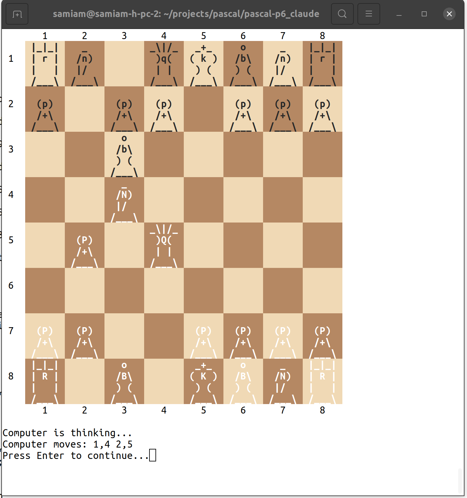

Pascal-P6 is the sixth generation of the Pascal-P portable Pascal compiler series, originally developed at ETH Zurich. P6 implements the Pascaline language, a modern extension of ISO 7185 Standard Pascal that adds modules, objects, exception handling, dynamic arrays, operator overloading, and other features while maintaining full backward compatibility with ISO 7185.
The system includes a self-compiling compiler (pcom), a P-code interpreter (pint), a native AMD64 code generator (pgen), a build tool (pc), and documentation utilities. All components are written in Pascaline and compile with the P6 compiler itself.
See the README for quick start instructions and setup details.
Repository
Standards and Manuals
Source Documentation
Sample Programs
About Pascal-P6


Pascal-P6 Open Source/Public Domain Project
Hi and welcome to the project. This is the GIT public repository for Pascal-P6.
Pascal-P was a series of compilers starting at Zurich. The last of the series from Zurich was the Pascal-P4 compiler, which is available at: https://github.com/samiam95124/Pascal-P4
It compiles and runs a subset of the Revised Pascal language. That subset was designed to be the minimum language required to self compile for a new machine implementation. It was part of a “bootstrapping” kit designed to facilitate porting Pascal to new machines.
Pascal-P5 is the next increment beyond Pascal-P4, and is extended to include all of the ISO 7185 Pascal language, as well as incorporate a series of ISO 7185 Pascal test services. It also includes the ability to self compile “out of the box”, that is, it can compile and interpret itself as is (with only a few one line changes), something the original Pascal-P could not do. It is also a full language compiler, not a subset. It is available at: https://github.com/samiam95124/Pascal-P5
Pascal-P6 is the next step beyond Pascal-P5. P6 is the place for all of the things that didn’t really belong in P5:
- To also compile to a target machine, the 80386 (and perhaps other machines), as well as interpret.
- To support language extensions.
Language of Pascal-P6
Pascal-P6 implements a language based on ISO 7185 called “Pascaline”, named after the calculating machine Blaise Pascal was famous for inventing.
Most extended Pascals are based on ad-hoc additions to the language. I wanted to create a new language that was not just a shopping cart of features, and so I put a lot of work into coming up with a language that fit together as a whole, and still maintained the style of Pascal.
What’s the difference between Pascaline and other extended Pascals? When Pascal debuted in the 1970s, it was extended by several variants of the language to look like Basic (UCSD and Borland), and then in the 1980s and beyond extended to look like C, while retaining Basic string handling (Borland). This language family is well represented by Borland products and the great FPC or “Free Pascal” project today.
What Pascaline does is extend the array handling to cover dynamically created arrays (including of char), and create a type system based on classes (objects). At the same time Pascaline heavily covers modularity and especially multitasking/parallel tasking.
The basis for Pascaline is type safety/security. However, type safety and security made a comeback with languages such as Java, C# (designed by the same author as Borland Pascal) and others. Thus, Pascaline is a type secure language that was always so, back through ISO 7185 Pascal.
Brief History of Pascaline
In 1980, I created a Z80 compiler (with no specific name). It was ISO 7185 compliant, and added a series of file handling functions like assign, close, etc., and also modularity along the lines of C. Procedures and functions used the “external” word-symbol, and Pascal components such as procedures, functions, variables, etc., could be put into separately compiled files. This compiler was written in Z80 assembly language.
In 1987, I started a second implementation on 80386 processors, entirely re-written in Pascal using the SVS 32 bit compiler (now defunct). This had the file handling of the old compiler, a new system of modular components, and variable length arrays. In 1993, that became operational. This was IP Pascal.
In 2003, I created a new specification that used the existing language of IP Pascal and greatly extended it. This was implemented on IP Pascal, and became the basis of the Pascaline specification.
Implementation Language of Pascal-P6
Pascal-P6 is implemented in Pascaline with support libraries in ANSI C.
What the Repository Contains
This repository contains the working set of files for the Pascal-P6 project. It contains all files, including source for the compiler, scripts to build, run and test it, and a full set of tests.
See the file “the_p6_compiler” in several document formats for all information on the project.
Releases
The procedure to distribute Pascal-P6 is to zip up a “release” with a new version number. This exists in the “release” area here on Github. In the meantime, you can get a file set from the code tree. Getting your code directly from GIT is essentially Alpha testing.
Goals of the Project
- Upgrade Pascal-P5, an ISO 7185 standard compiler, to fully implement Pascaline, an extended Pascal language.
- Be a model of the implementation of a Pascaline compiler.
FAQs
Q. Is Pascal-P6 compatible with Borland Delphi?
A. Pascal-P6 is based on the original compiler and language from 1973, Delphi, or rather its parent project Turbo Pascal, was created in 1983 and wasn’t compatible with Pascal.
Q. Is Pascal-P6 compatible with FPC or Free Pascal?
A. Some part of it. FPC accepts programs from the ISO 7185 1983 Pascal standard with appropriate options.
Q. How old is the language Pascal?
A. The language originated in 1973, and was standardized by ISO 7185 in 1983.
Q. Isn’t the original language Pascal dead?
A. Original, standard Pascal still had widespread support in commercial compilers up to about 1995. It was supported further by GPC (GNU Pascal) up to about 2010. It is true that commercial compiler support for the language fell off in about 1995, but then most commercial compilers for all languages stopped about that time, in preference to open source compilers.
Q. What’s the major difference between original Pascal and the FPC/Delphi dialects?
A. Original Pascal was, and is, a very type secure language that lacks the type casts and loose type conversions of FPC/Delphi. There is nothing wrong with that, but FPC/Delphi became a mix of the Pascal and C languages. In later years, with the rise of Java, C#, and of late languages like Go, Rust and similar languages, type safety has had a renaissance, largely due to C and similar languages’ reputation for lack of such security.
Q. What are the major themes of Pascaline?
A. Pascaline addresses all of the original weaknesses of Pascal, such as reliance on fixed array sizes and lack of modularity. It adds emphasis on parallel tasking, classes, and a standard library reaching graphical presentation, networking and more. It does this while maintaining full compatibility with original Pascal and fully maintaining type security.
Q. What is the Pascal-P6 compiler?
A. The Pascal-P6 compiler is the original compiler from Zurich in the 1970’s extended to process the full Pascaline language.
Q. How can you access C language routines in a language without C style typecasts?
A. In other Pascal dialects, you are given a series of type cast operations, and you use routines to convert types to and from C routines. The Pascal-P6 compiler will automate all of that, including automated conversion of C language headers to Pascaline. There are no cast operators because you don’t need them. You call C routines using Pascaline regular calls, and those calls are automatically converted for you. No need to manually convert operands. Linux, Windows, Mac OS/X and the world speaks C, and Pascal-P6 integrates with the C language to an extent far above previous compilers, including FPC and Delphi.
Q. How old is Pascaline?
A. I created my first Pascal compiler in 1980 (yes, years before Turbo Pascal). The language Pascaline dates from that time, with major advances in 1995 and 2010.
Q. What is the Pascal-P6 implementation language?
A. Pascal-P6, and the entire Pascal-P series, is written in Pascal, with later Pascal-P6 adding extensions from Pascaline. There are considerable support sections in C, but an effort was made to use only the most common C standards, namely C89.
Q. Will Pascal-P6 support other dialects? FPC or Delphi?
A. In my opinion, GPC (GNU Pascal) was killed in part by trying to be everything to everyone, including supporting multiple dialects. The FPC and Delphi dialects are well covered by FPC and Delphi. The aim of those dialects was to combine Pascal with C. There is nothing wrong with that, but it is in opposition to type safety, and therefore in opposition to the ideas behind Pascal-P6 and Pascaline. The best advice I can give FPC and Delphi users is to use and enjoy FPC or Delphi.
Q. How tied into the GNU/GCC toolset is Pascal-P6?
A. Quite a bit, however, the main dependency is on the GAS or GCC assembler. This can be changed with moderate effort. Also clang is compatible at the assembly and C language level with GCC, and so that is an alternate toolset.
Q. Didn’t overdependence on GCC toolset kill GPC? Why is Pascal-P6 different?
A. GPC was dependent on the intermediate format of GCC, which is very complex and very dependent on GCC. Pascal-P6 does not use that, but rather the AMD64 assembly language. Also the major part of Pascal-P6 is written in Pascal-P6’s own language, Pascaline.
Q. Why Pascal (and not another language)?
A. As the common quote goes “Pascal is a teaching language”. Pascal was a very sparse language that relied on simple fixed rules, but was still very much in the Algol family (as is C and most other languages). I agree that original Pascal was not ready for professional programming tasks, but it actually made a better starting point than many other languages that resemble dumping grounds for language features. Original Pascal was also very type secure, a feature that only after decades gained wide appreciation. Another factor is that the original fixed allocation method of Pascal is a useful optimization technique even today, since it can create arrays with less overhead.
Q. Why Pascal and not further languages from Niklaus Wirth (Modula, Oberon)?
A. As a working professional, I can’t change languages as often as they arrive from designers. Niklaus Wirth designed a new language about every 10 years. Throwing everything out and starting over is a common feature and problem in the software profession. However, our profession relies on a wide library of existing stable programs. This is evidenced by the staying power of C from the 1970’s to today. Pascal is a very good starting point for language extensions.
Project
Project Members
Scott Franco (admin)
Who am I?
I’m Scott Franco. I wrote my first compiler in about 1978, a basic compiler, at the tender age of 19. At that time, in the microprocessor industry, compiled languages were not widespread, but I was eager to get my hands on one. We programmed almost exclusively in assembly language. I asked one of the senior staff programmers what language he would prefer if he had a compiler, and he answered “Pascal”, which was pretty new at that time.
By 1980, I had my first Pascal compiler running, a Z80 (8 bit microprocessor) compiler. Since then I have worked on Pascal issues and compilers. This work slowed down in the early 1990’s, because I used other’s existing compilers, but came back in the late 1990’s when ISO 7185 compilers began to disappear.
Printed Manuals
For anyone with the interest, I can provide a set of printed and perfect bound manuals, 9 by 7 inches. See the photo above. I use bound material here locally, and would be happy to provide manuals for others at my materials cost (non-profit). I used a calculation based on 3 cents per page, which many sources list as the net printing cost per page of black and white laser copy, considering paper, toner, printer maintenance, etc. There is also Cafe press perfect binding at 10 cents per page, in case you want to print and bind by an outside service.
The manuals shipped will be identical to the electronic copies in the archive at the time I receive the request. You can get as many versions as you want by reordering. I recommend waiting for new versions to come out.
The costs are:
$6.92 Postage, media mail $1.34 Envelope 808 Total pages in manual $0.03 Cost per page $24.24 Total cost to print $32.50 Total cost
If you want a copy, please contact me at: samiam@moorecad.com
The US postal service gives a special “media mail” rate that is the same regardless of location in the USA (I suppose to encourage reading). For addresses outside the USA, please email me and given the destination address, and I will find a rate and reply with it.
The pocket edition!